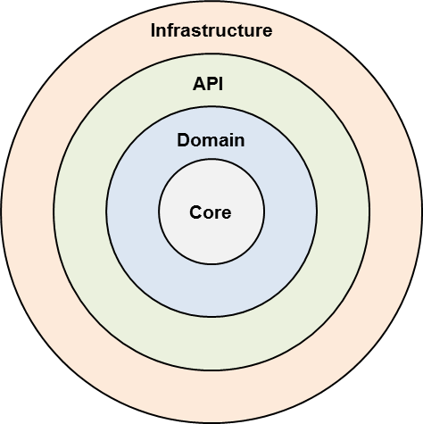
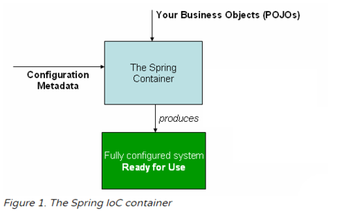
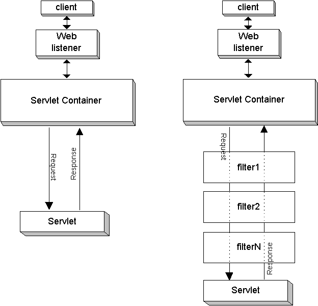
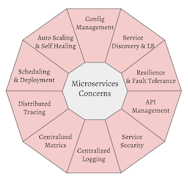
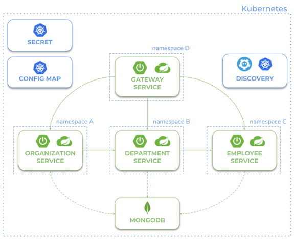
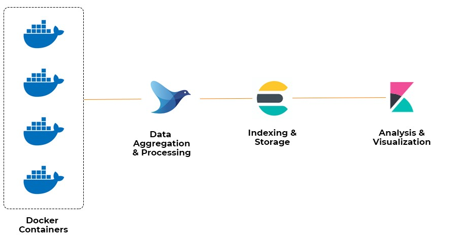
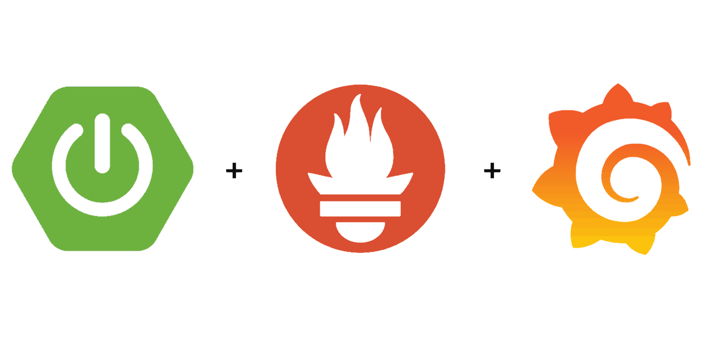
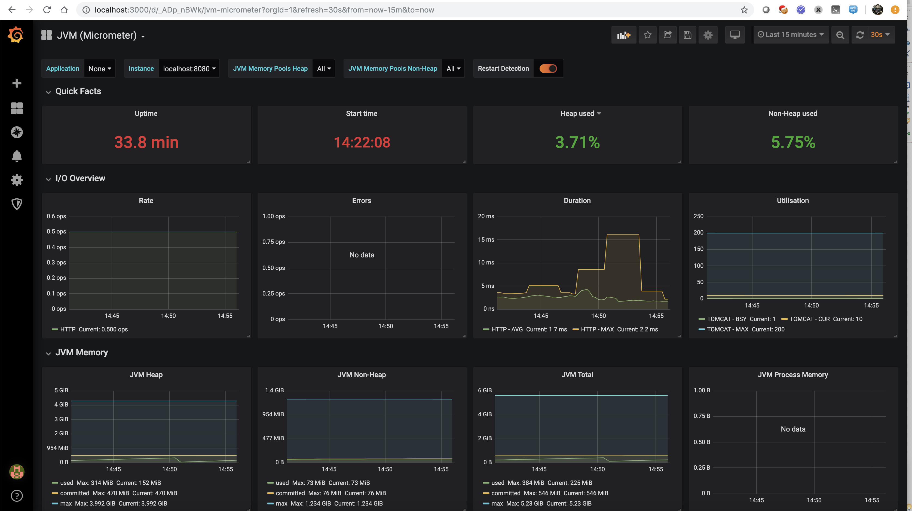

Programación de Aplicaciones Telemáticas
Tema 6: Spring Boot
Agenda
Sessión 1
- Spring Framework
- Spring Boot
- Mi primera aplicación Spring
- Scaffolding de un proyecto
- References
Agenda
Sessión 2
- Spring Core
- Spring Web
Agenda
Sessión 3
- Error Handling
- Consumiendo HTTP Endpoints
- Validacion de Bean
- Configuracion
Agenda
Sessión 4
- Logging
- Scheduling
- Actuator
- Spring Security
Agenda
Sessión 5
- Arquitectura Neflix
- Arquitectura K8S
- Servicios auxiliares
Sessión 1
Spring Framework
Spring Framework proporciona un completo modelo de programación y configuración para aplicaciones empresariales modernas basadas en Java en cualquier tipo de plataforma de despliegue.
Spring Framework
Why Spring?
Spring nació en 2003 como respuesta a la complejidad de las primeras especificaciones J2EE.
Spring Framework
- Servlet API (JSR 340)
- Concurrency Utilities (JSR 236)
- JSON Binding API (JSR 367)
- Bean Validation (JSR 303)
- JPA (JSR 338)
- JMS (JSR 914)
- Dependency Injection (JSR 330)
- Common Annotations (JSR 250)
Spring Framework
¿Cual es el patrón de diseño detras de Spring Framework?

Spring Boot
Spring Boot es una tecnología para crear aplicaciones autocontenidas. De este modo, el equipo se puede centrar en el desarrollo a medida. Dejando a un lado la arquitectura. Es decir, se delega en Spring Boot las labores de configuración de dependencias y el despliegue del servicio de aplicaciones.
Spring Boot
Ecosistema Spring
https://spring.io/projects
Spring Boot
Spring Initializr
https://start.spring.io/
Spring Boot
Spring Boot Starters
Spring Boot Starter POMs es una utilidad existente dentro de Spring Boot que facilita la creación y configuración de una aplicación Java. Cuando creamos un proyecto y montamos el fichero de configuración de Maven debemos añadir las librerías de Spring y de terceros que necesita el proyecto para funcionar.
https://docs.spring.io/spring-boot/docs/2.3.3.RELEASE/reference/htmlsingle/#using-boot-starter
Spring Boot
Mi primera aplicación Spring
curl https://start.spring.io/starter.zip \
-d dependencies=web,actuator,devtools \
-d bootVersion=2.4.1 \
-o my-project.zip
- https://start.spring.io/
- https://docs.spring.io/initializr/docs/current/reference/html/#command-line
Spring Boot
Mi primera aplicacion Spring
@SpringBootApplication
public class DemoApplication {
private static ConfigurableApplicationContext applicationContext;
public static void main(String[] args) {
applicationContext = SpringApplication.run(DemoApplication.class, args);
displayAllBeans();
}
public static void displayAllBeans() {
String[] allBeanNames = applicationContext.getBeanDefinitionNames();
AtomicInteger counter = new AtomicInteger();
Arrays.asList(allBeanNames).stream()
.map(bean -> counter.incrementAndGet() + " " + bean)
.forEach(System.out::println);
}
}
Spring Boot
Scaffolding de un proyecto
Referencies
- https://docs.spring.io/spring-framework/docs/current/reference/html/
- https://docs.spring.io/spring-framework/docs/current/reference/html/core.html#spring-core
- https://docs.spring.io/spring-boot/docs/current/reference/htmlsingle/
- https://docs.spring.io/spring-framework/docs/current/reference/html/web.html
- https://docs.spring.io/spring-boot/docs/2.3.3.RELEASE/reference/htmlsingle/#using-boot-starter
- https://docs.spring.io/initializr/docs/current/reference/html/#command-line
Sessión 2
Spring Core
Spring Core
Spring Container
Spring Core
Spring Container
Spring Core
Spring Container
El contenedor de Spring es uno de los puntos centrales de Spring, se encarga de crear los objetos, conectarlos entre si, configurarlos y además controla los ciclos de vida de cada objeto mediante el patrón de Inyección de Dependencias.
Spring Web
Servlet API
Jakarta Servlet (anteriormente Java Servlet) es un componente de software Java que amplía las capacidades de un servidor. Aunque los servlets pueden responder a muchos tipos de peticiones, lo más común es que implementen contenedores web para alojar aplicaciones web y por lo tanto se califican como una API web servlet del lado del servidor.
Spring Web
Servlet API (JSR 340)
Spring Web
https://docs.spring.io/spring-framework/docs/current/reference/html/web.html#spring-web
Spring Web
Package org.springframework.web.servlet
https://docs.spring.io/spring-framework/docs/current/javadoc-api/org/springframework/web/servlet/package-summary.html
Spring Web
Dispatcher Servlet
Spring MVC, como muchos otros frameworks web, está diseñado en base al patrón "Front Controller" donde, el DispatcherServlet, proporciona un algoritmo compartido para distribuir las peticiones entre los componentes delegados configurables.
Spring Web
Spring Web Example
@GetMapping("/{id}")
public Stormtrooper getTrooper(@PathVariable("id") String id) throws NotFoundException {
Stormtrooper stormtrooper = trooperDao.getStormtrooper(id);
if (stormtrooper == null) {
throw new NotFoundException();
}
return stormtrooper;
}
Referencies
- https://spring.io/blog/2018/12/12/how-fast-is-spring
- http://tomcat.apache.org/tomcat-10.0-doc/architecture/requestProcess.html
- https://medium.com/javarevisited/spring-beans-in-depth-a6d8b31db8a1
- https://medium.com/javarevisited/top-spring-annotations-4f691babe458
- https://martinfowler.com/eaaCatalog/frontController.html
Sessión 3
Spring Web
Error Handling
- ExceptionHandler
- ControllerAdvice
Spring Web
Error Handling
Define un método para manejar excepciones y anótalo con @ExceptionHandler a nivel de @Controller
@ResponseStatus(value=HttpStatus.CONFLICT,
reason="Data integrity violation") // 409
@ExceptionHandler(DataIntegrityViolationException.class)
public void conflict() {
// Nothing to do
}
Spring Web
Error Handling
Spring ofrece soporte para un @ExceptionHandler global con la anotación @ControllerAdvice
@ControllerAdvice
public class RestResponseEntityExceptionHandler
extends ResponseEntityExceptionHandler {
@ExceptionHandler(value= { IllegalArgumentException.class})
protected ResponseEntity< Object > handleConflict(
RuntimeException ex, WebRequest request) {
String bodyOfResponse = "This should be application specific";
return handleExceptionInternal(ex, bodyOfResponse,
new HttpHeaders(), HttpStatus.CONFLICT, request);
}
}
Spring Web
Consumiendo HTTP Endpoints (Request)
RestTemplate restTemplate = new RestTemplate();
String fooResourceUrl
= "http://localhost:8080/spring-rest/foos";
ResponseEntity response
= restTemplate.getForEntity(fooResourceUrl + "/1", String.class);
Spring Web
Consumiendo HTTP Endpoints (Response Plain JSON)
ObjectMapper mapper = new ObjectMapper();
JsonNode root = mapper.readTree(response.getBody());
JsonNode name = root.path("name");
Spring Web
Consumiendo HTTP Endpoints (Response POJO)
public class Foo implements Serializable {
private long id;
private String name;
// standard getters and setters
}
Foo foo = restTemplate
.getForObject(fooResourceUrl + "/1", Foo.class);
assertThat(foo.getName(), notNullValue());
assertThat(foo.getId(), is(1L));
Spring Web
Consumiendo HTTP Endpoints (Obtener Headers)
HttpHeaders httpHeaders = restTemplate.headForHeaders(fooResourceUrl);
Spring Web
Consumiendo HTTP Endpoints (Create Resource - POST)
RestTemplate restTemplate = new RestTemplate();
HttpEntity request = new HttpEntity<>(new Foo("bar"));
Foo foo = restTemplate.postForObject(fooResourceUrl, request, Foo.class);
Spring Web
Consumiendo HTTP Endpoints (Update Resource - PUT)
Foo updatedInstance = new Foo("newName");
updatedInstance.setId(createResponse.getBody().getId());
String resourceUrl =
fooResourceUrl + '/' + createResponse.getBody().getId();
HttpEntity requestUpdate = new HttpEntity<>(updatedInstance, headers);
template.exchange(resourceUrl, HttpMethod.PUT, requestUpdate, Void.class);
Spring Web
Consumiendo HTTP Endpoints (Delete Resource - DELETE)
String entityUrl = fooResourceUrl + "/" + existingResource.getId();
restTemplate.delete(entityUrl);
Referencias
https://docs.spring.io/spring-boot/docs/current/reference/htmlsingle/#boot-features-resttemplate
https://docs.spring.io/spring-framework/docs/current/javadoc-api/index.html?org/springframework/web/client/RestTemplate.html
Spring Web
Validación de Bean
public class PersonForm {
@NotNull
@Size(min=2, max=30)
private String name;
@NotNull
@Min(18)
private Integer age;
}
https://hibernate.org/validator/
https://docs.jboss.org/hibernate/stable/validator/reference/en-US/html_single/#validator-defineconstraints-spec
@Controller
public class WebController {
@PostMapping("/")
public String checkPersonInfo(@Valid PersonForm personForm,
BindingResult bindingResult) {
if (bindingResult.hasErrors()) {
return "KO";
}
return "OK";
}
}
https://docs.spring.io/spring-framework/docs/current/javadoc-api/org/springframework/validation/BindingResult.html
Spring Web
Configuracion
Cual es el valor?
- Externalizar configuracion
- Soporte de múltiples entornos
- Evitar tener configuración en Código
- Facilitar el testing
https://docs.spring.io/spring-boot/docs/current/reference/html/appendix-application-properties.html
Spring Web
Configuracion
@Configuration
public class WebConfig {
@Bean
public RestTemplateBuilder restTemplateBuilder() {
return new RestTemplateBuilder()
.setConnectTimeout(1000)
.setReadTimeout(1000)
.customizers(rtc);
}
@Bean
public RestTemplate restTemplate(final RestTemplateBuilder restTemplateBuilder) {
return restTemplateBuilder.build();
}
}
Spring Web
Configuracion
@RestController
@RequestMapping(value = "/api")
public class heroesController {
@Autowired
RestTemplate restTemplate;
@GetMapping(value = "/service1", produces = MediaType.APPLICATION_JSON_VALUE)
public ResponseEntity getHeroes() {
final String url = http://localhost:8080/service1";
final ResponseEntity response = restTemplate.getForEntity(url, Model1[].class);
return response;
}
}
Referencies
- https://spring.io/blog/2013/11/01/exception-handling-in-spring-mvc
- https://docs.spring.io/spring-boot/docs/current/reference/htmlsingle/#boot-features-resttemplate
- https://hibernate.org/validator/
Sessión 4
- Logging
- Scheduling
- Actuator
- Spring Security
Logging
Why
El registro de "Logging" consiste en escribir mensajes de registro durante la ejecución de un programa en un lugar centralizado. Este registro permite notificar y conservar mensajes de error y advertencia, así como mensajes informativos.
Logging
2019-03-05 10:57:51.112 INFO 45469 --- [ main] org.apache.catalina.core.StandardEngine : Starting Servlet Engine: Apache Tomcat/7.0.52
2019-03-05 10:57:51.253 INFO 45469 --- [ost-startStop-1] o.a.c.c.C.[Tomcat].[localhost].[/] : Initializing Spring embedded WebApplicationContext
2019-03-05 10:57:51.253 INFO 45469 --- [ost-startStop-1] o.s.web.context.ContextLoader : Root WebApplicationContext: initialization completed in 1358 ms
2019-03-05 10:57:51.698 INFO 45469 --- [ost-startStop-1] o.s.b.c.e.ServletRegistrationBean : Mapping servlet: 'dispatcherServlet' to [/]
2019-03-05 10:57:51.702 INFO 45469 --- [ost-startStop-1] o.s.b.c.embedded.FilterRegistrationBean : Mapping filter: 'hiddenHttpMethodFilter' to: [/*]
Logging
Log Format
- Date and Time: Millisecond precision and easily sortable.
- Log Level: ERROR, WARN, INFO, DEBUG, or TRACE.
- Process ID.
- A --- separator to distinguish the start of actual log messages.
- Thread name: Enclosed in square brackets
- Logger name: This is usually the source class name
- The log message.
Logging
Log Levels
- ERROR Otros errores de ejecución o condiciones inesperadas. Espere que estos sean inmediatamente visibles en una consola.
- WARNING Uso de API obsoletas, mal uso de la API u otras situaciones en tiempo de ejecución que son indeseables o inesperadas, pero no necesariamente "incorrectas".
Logging
Log Levels
- INFO Eventos interesantes en tiempo de ejecución (arranque/apagado). Espere que estos sean visibles inmediatamente en una consola.
- DEBUG información detallada sobre el flujo de ejecucióna través del sistema.
- TRACE Información más detallada.
Logging
logging.level.root=warn
logging.level.org.springframework.web=debug
logging.level.org.hibernate=error
Scheduling
Con Spring Boot, es possible planificar la ejecucion de Beans para un proposito concreto.
Es posible planificarlo en 3 maneras diferentes: cron(), fixedDelay(), or fixedRate()
Scheduling
@Sl4j
@Component
public class ScheduledTasks {
private static final SimpleDateFormat dateFormat =
new SimpleDateFormat("HH:mm:ss");
@Scheduled(fixedRate = 5000)
public void reportCurrentTime() {
log.info("The time is now {}", dateFormat.format(new Date()));
}
}
Scheduling
@Sl4j
@Component
public class ScheduledTasks {
private static final SimpleDateFormat dateFormat =
new SimpleDateFormat("HH:mm:ss");
@Scheduled(cron = "0 15 10 15 * ?")
public void scheduleTaskUsingCronExpression() {
long now = System.currentTimeMillis() / 1000;
log.info("schedule tasks using cron jobs - {}", now);
}
}
Actuator
Definition
Componentes que supervisan nuestra aplicación, recopilan métricas, comprenden y analizan el tráfico y el estado de nuestra base de datos, y todo ello sin falta de tener que implementarlo por nuestra cuenta.
Actuator
Why
Actuator endpoints le permiten supervisar su aplicación e interactuar con ella. Spring Boot incluye una serie de "endpoints" integrados y le permite añadir los suyos propios.
Actuator
Endpoints
auditevents, beans, caches, conditions, configprops, env, flyway, health, httptrace, info, integrationgraph, loggers, liquibase, metrics, mappings, scheduledtasks, sessions, shutdown, startup, threaddump
Spring Security
Spring Security
Features
- Authentication
- Cross Site Request Forgery (CSRF)
- Security HTTP Response Headers
- HTTP
Spring Security
Basic Authentication
En el contexto de una transacción HTTP, la autenticación de acceso básica es un método diseñado para permitir a un navegador web, u otro programa cliente, proveer credenciales en la forma de usuario y contraseña cuando se le solicita una página al servidor.
Spring Security
Basic Authentication (Configuración)
@Configuration
@EnableWebSecurity
public class CustomWebSecurityConfigurerAdapter extends WebSecurityConfigurerAdapter {
@Autowired
private MyBasicAuthenticationEntryPoint authenticationEntryPoint;
@Autowired
public void configureGlobal(AuthenticationManagerBuilder auth) throws Exception {
auth.inMemoryAuthentication()
.withUser("user1").password(passwordEncoder().encode("user1Pass"))
.authorities("ROLE_USER");
}
@Override
protected void configure(HttpSecurity http) throws Exception {
http.authorizeRequests()
.antMatchers("/securityNone").permitAll()
.anyRequest().authenticated()
.and()
.httpBasic()
.authenticationEntryPoint(authenticationEntryPoint);
http.addFilterAfter(new CustomFilter(),
BasicAuthenticationFilter.class);
}
@Bean
public PasswordEncoder passwordEncoder() {
return new BCryptPasswordEncoder();
}
}
Spring Security
Basic Authentication (Solicitud sin credenciales)
curl -i http://localhost:8080/spring-security-rest-basic-auth/api/foos/1
HTTP/1.1 401 Unauthorized
Server: Apache-Coyote/1.1
Set-Cookie: JSESSIONID=E5A8D3C16B65A0A007CFAACAEEE6916B; Path=/spring-security-mvc-basic-auth/; HttpOnly
WWW-Authenticate: Basic realm="Spring Security Application"
Content-Type: text/html;charset=utf-8
Content-Length: 1061
Date: Wed, 29 May 2013 15:14:08 GMT
Spring Security
Basic Authentication (Solicitud con credenciales)
curl -i --user user1:user1Pass http://localhost:8080/spring-security-rest-basic-auth/api/foos/1
HTTP/1.1 200 OK
Server: Apache-Coyote/1.1
Set-Cookie: JSESSIONID=301225C7AE7C74B0892887389996785D; Path=/spring-security-mvc-basic-auth/; HttpOnly
Content-Type: text/html;charset=ISO-8859-1
Content-Language: en-US
Content-Length: 90
Date: Wed, 29 May 2013 15:19:38 GMT
Referencias:
- https://en.wikipedia.org/wiki/Java_logging_framework
- https://docs.spring.io/spring-boot/docs/current/reference/html/spring-boot-features.html#boot-features-logging
- https://spring.io/guides/gs/scheduling-tasks/
- https://docs.spring.io/spring-framework/docs/current/reference/html/integration.html#scheduling
Referencias:
- https://docs.spring.io/spring-framework/docs/current/reference/html/integration.html#scheduling-annotation-support-scheduled
- https://docs.spring.io/spring-boot/docs/current/reference/html/production-ready-features.html
- https://docs.spring.io/spring-boot/docs/current/reference/html/spring-boot-features.html#boot-features-security
Sessión 5
Ecosistema de Microservicios
Arquitectura Cloud Netflix

Arquitectura Cloud Netflix
Componentes
- Gateway: Zuul
- Service Discovery: Eureka
- External Configuration: Spring Cloud Config
- Load Balancing: Ribbon
Arquitectura Cloud Kubernetes
Arquitectura Cloud Kubernetes
Componentes
- Gateway: Spring Cloud Gateway / Ingress
- Service Discovery: K8S
- External Configuration: Config Maps
- Load Balancing: K8S
Servicios Auxiliares
- Central Logging
- Monitoring & Alerting
- Distributed Tracing
Servicios Auxiliares
Central Logging (EFK)
Se necesita una solucion para centralizar el Logging de todos los microservicios.
Servicios Auxiliares
Monitoring & Alerting
Se necesita una solucion para centralizar la monitorizacion de la salud de los microservicios.
Es necesario monitorizar: CPU, Memoria consumida, Threads, GC, otros...
Servicios Auxiliares
Monitoring & Alerting
Servicios Auxiliares
Distributed Tracing
Soluciona la necesidad de centralizar la trazabilidad de peticiones a los microservicios

Referencias
- https://12factor.net
- https://spring.io/cloud
- https://docs.spring.io/spring-boot/docs/current/reference/htmlsingle/
- https://landscape.cncf.io
- https://github.com/cncf/landscape/blob/master/README.md#trail-map